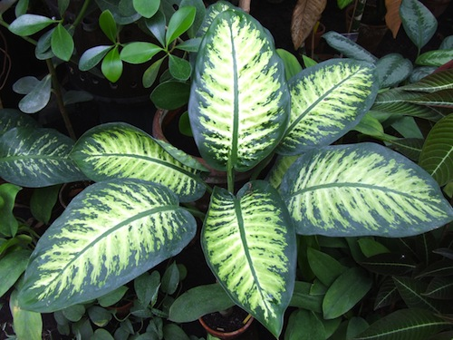
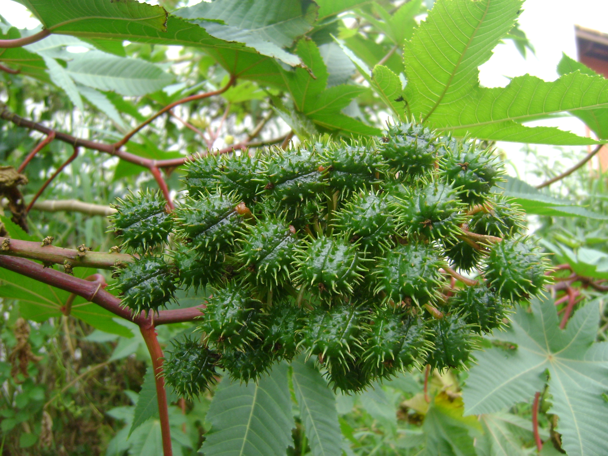
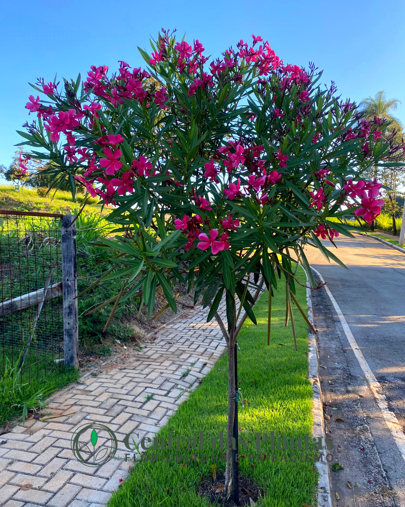

Guia das Plantas Venenosas do Brasil
Conheça algumas das plantas tóxicas mais conhecidas encontradas no território brasileiro.

Muito utilizada como planta ornamental.
Nome científico: Dieffenbachia seguine
Parte tóxica: folhas e caule.
Sintomas: irritação, dor, inchaço e dificuldade para falar.

Planta conhecida por suas sementes altamente tóxicas.
Nome científico: Ricinus communis
Parte tóxica: sementes.
Sintomas: vômitos, diarreia intensa e intoxicação grave.

Muito utilizada em jardins e praças.
Nome científico: Nerium oleander
Parte tóxica: toda a planta.
Sintomas: alterações cardíacas, náuseas e vômitos.